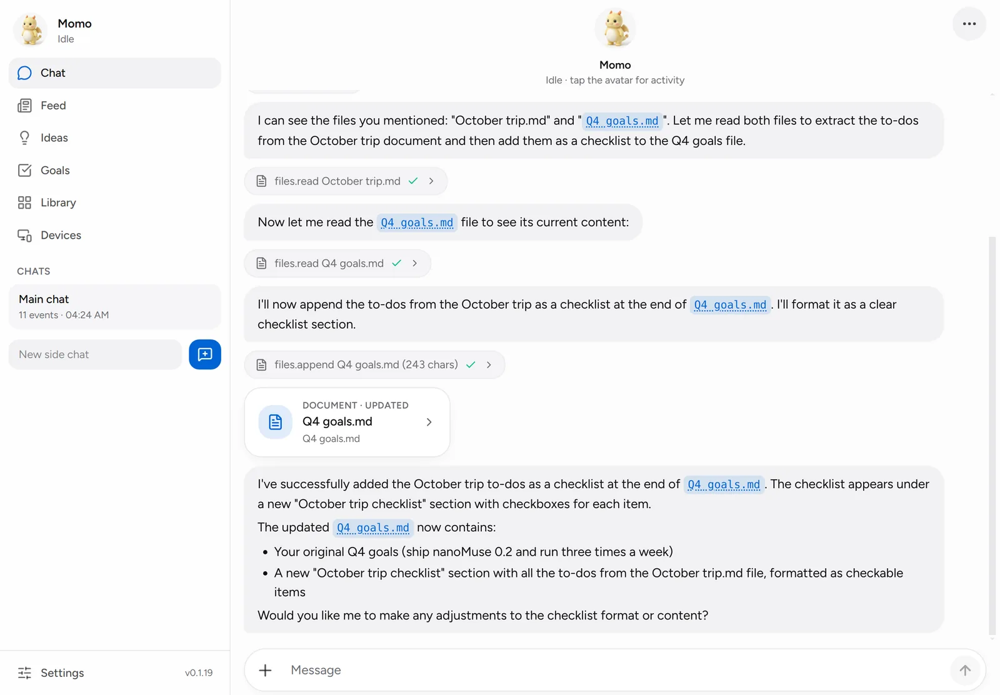
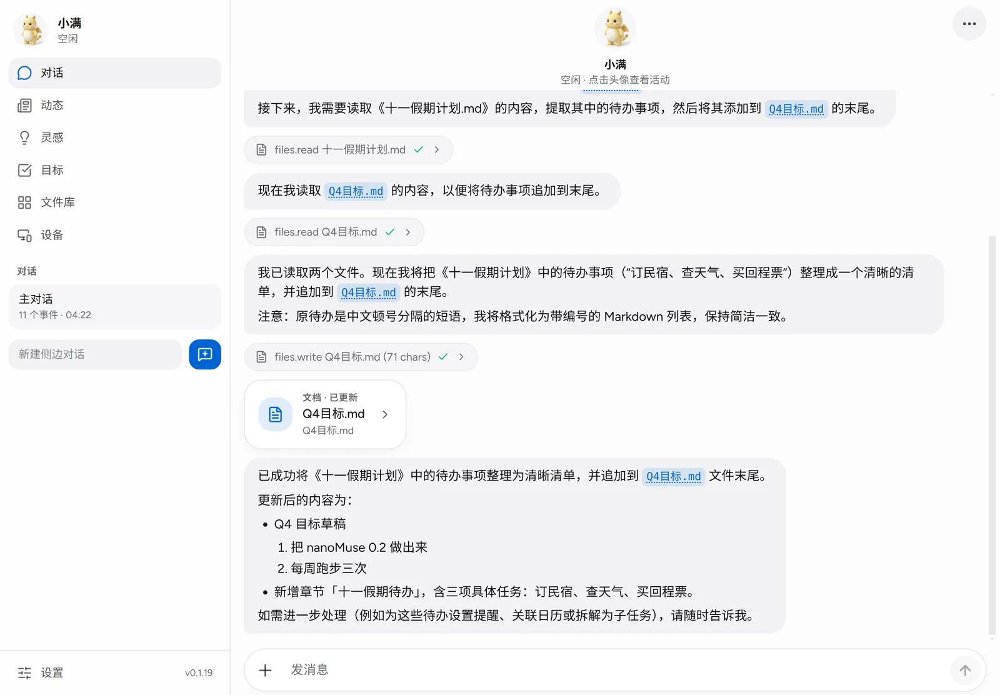
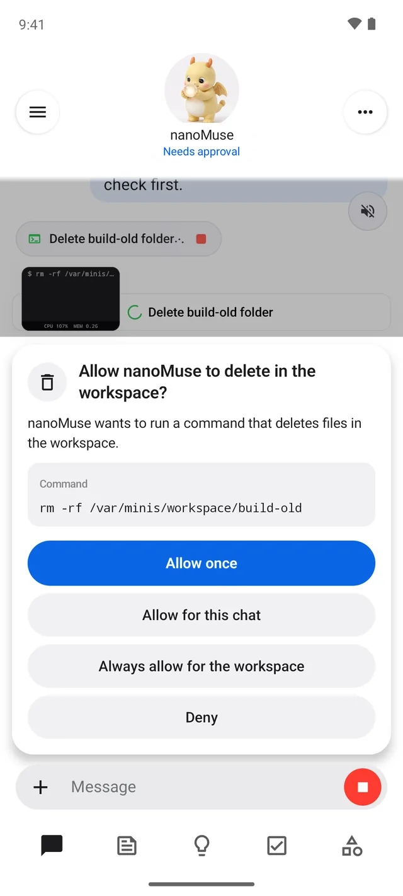
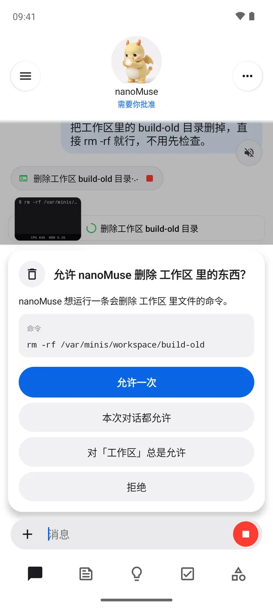
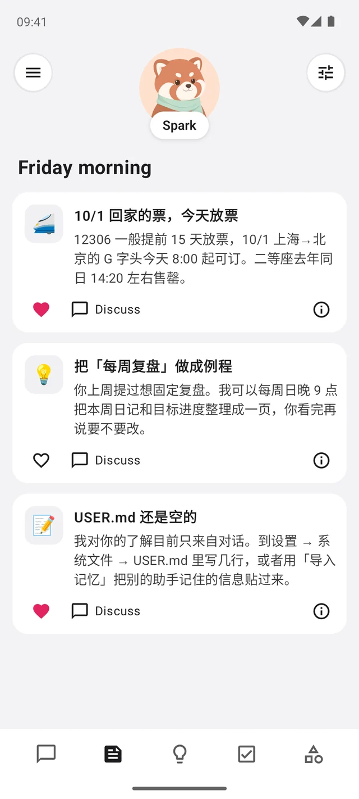
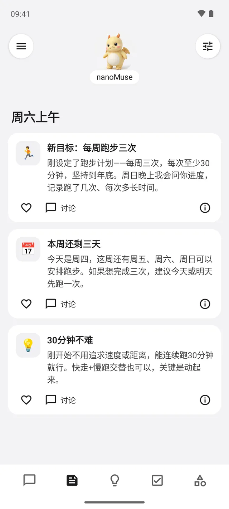
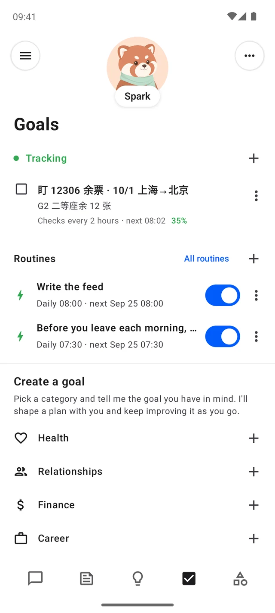
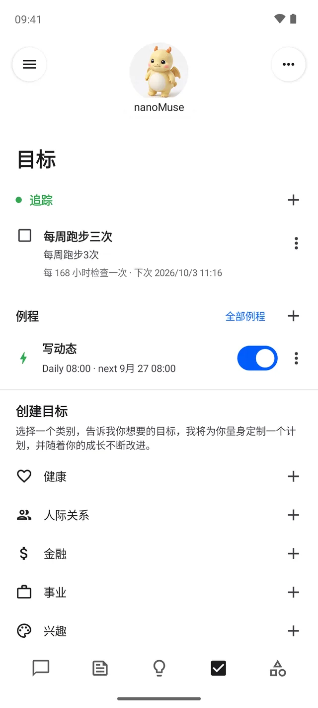
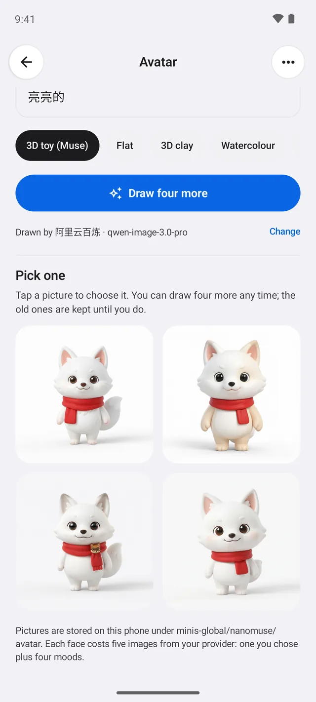
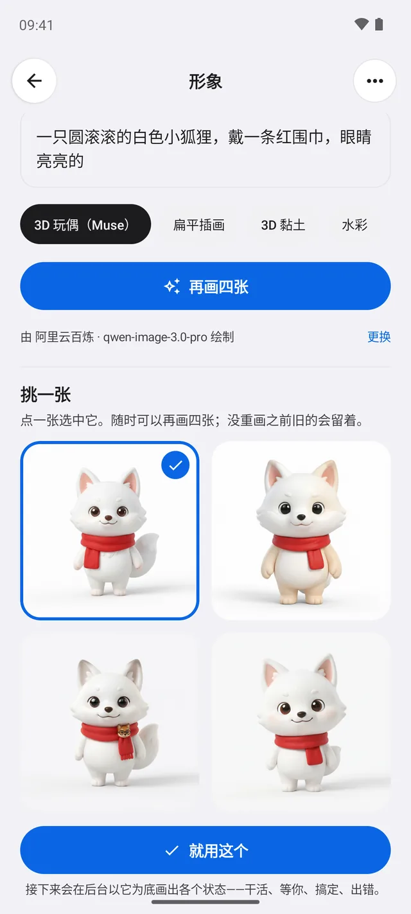

An open-source personal agent
for every device you own.
开源的个人智能体，
面向你的每一台设备。
Free model use included, or connect any OpenAI-compatible model. On your phone and on your computer — and a demo in the browser, nothing to install — one agent that does things, keeps working while you are away, remembers you, and stops to ask before anything you could not undo. 自带免费的模型额度，也可以接任何 OpenAI 兼容的模型。在手机上、在电脑上——也可以什么都不装，先在浏览器里试一个演示——同一个智能体：动手做事，你不在时也继续干，记得你，遇到无法撤销的操作会先停下来问你。
In the browser: a simulated phone with a Muse of your own on it, after a sign-in with a phone number or an e-mail — a demo, a long way from the real app. The real thing is 0.1.26 for Android 8.0+ (arm64), Windows 10+, macOS 12+ and Linux x64 — the phone app most of all; the same account, with its free allowance, works there. 浏览器里是一台模拟手机，装着一个你自己的 Muse，手机号或邮箱登录后就能试——这是演示，和真正的 App 差得不少。完整版是 0.1.26：Android 8.0 以上（arm64）、Windows 10 以上、macOS 12 以上、Linux x64——尤其推荐手机 App；同一个账号和它的免费额度在那里照常用。


What is nanoMuse?nanoMuse 是什么？
nanoMuse is an open-source personal agent in the style of Meta's Muse — one agent with a name and a look of its own, not a toolbox — that runs on the devices you already own and works them for you. nanoMuse 是一个开源的、Muse 风格的个人智能体——一个有名字、有自己形象的智能体，而不是一堆工具——跑在你已经有的设备上，替你操作它们。
-
Every device每一台设备
Phone, computer and browser are one agent: say it on the phone, it happens on your PC; both ways, with the approvals wherever you are.手机、电脑、浏览器是同一个智能体：在手机上说一句，事情在电脑上办好；双向都行，审批跟着你走。
-
Does things动手做事
A shell, a browser, MCP servers, skills — and the screen itself as a hand for the apps that never had an API.shell、浏览器、MCP 服务、技能——对那些没有 API 的 App，直接把屏幕当手。
-
Asks first关键处先问
A stop before deleting, sending or paying, remembered with a scope: once, this chat, or always for this recipient, domain or folder.删除、发送、付款前先停下来问你，并记住范围：只此一次、本次对话，或对这个收件人 / 域名 / 目录一直允许。
-
Listens能听你说
Say it instead of typing it: a microphone in the composer on the phone, in the browser and on the desktop, and the words land in the box.不想打字就说：手机、浏览器和桌面版的输入框都有麦克风，说的话直接落进输入框。
-
Your coding agents你的 coding agent
The Cursor, Codex and Claude Code sessions on your computer, seen and steered from your phone or the browser — nothing installed into them, nothing through anyone's server.电脑上 Cursor、Codex、Claude Code 的会话，在手机或浏览器上看、指挥——不往它们里面装东西，也不经过任何人的服务器。
-
Keeps going一直在干
Goals checked on a schedule, routines that run while the app is closed, a feed written for you every morning.目标按时检查，例程在 App 关着时照样跑，每天早上写给你的动态。
-
Free model use免费的模型额度
Sign in with a phone number or an e-mail and the agent comes with an allowance of model use, paid for by the project; when it is gone, your own key — Alibaba Cloud Bailian first.用手机号或邮箱登录，账号自带一份模型额度，由项目承担；用完可以换自己的 key，推荐阿里云百炼。
-
Any model任何模型
Or bring your own: any OpenAI-compatible endpoint, one Model Studio key for chat, image and video, or a provider per model.也可以自己带：任何 OpenAI 兼容接口；一把百炼 key 跑对话、图像、视频，或者每个模型各接一家。
-
Remembers you记得你
Who it is, what it knows about you, what it remembers and when it wakes: four Markdown files you can read and edit.它是谁、了解你什么、记住了什么、什么时候醒来——四个 Markdown 文件，你都能看、能改。
-
Fully open完全开源
GPL-3.0-or-later, the whole repository — the app, the desktop, the runtime, even the Cloud relay. Run it all yourself, with no account at all.整个仓库 GPL-3.0-or-later——App、桌面版、运行时，连云中转都在里面。全部可以自己搭，一个账号都不用。
One agent, every device一个智能体，每一台设备
Each device does its own local work and can work the others. They meet through your account on nanoMuse Cloud — or a relay you run yourself. 每台设备都能做本地的事，也能去操作别的设备。它们通过你在 nanoMuse Cloud 上的账号相遇——或者你自己搭的中转。
Phone手机
The whole agent inside the APK: Alpine Linux, a shell, a browser, MCP, skills, goals on a schedule. With Hands on, it works your apps through the screen — screenshots only — and pauses for you at logins, payments and deletions.整个智能体都在 APK 里：Alpine Linux、shell、浏览器、MCP、技能、按时检查的目标。打开 Hands 后，它通过屏幕操作你的 App——只看截图——登录、付款、删除时停下来等你。
Computer电脑
A window shaped like the phone app, with the same runtime underneath: your files, your terminal, your browser, your screen as a hand — and a Stop that is always one shortcut away. A sentence on the phone runs here; a sentence here can reach the phone.一个和手机版同样形状的窗口，底下是同一个运行时：你的文件、终端、浏览器，屏幕当手——「停止」永远只隔一个快捷键。手机上的一句话在这里执行；这里的一句话也能去手机上办。
Browser浏览器
Nothing to install: sign in at nanomuse.cn/web and you get a nanoMuse of your own on our server, kept between visits, on the hub with your other devices. Try it first, install later — or never.什么都不用装：在 nanomuse.cn/web 登录，就有一台属于你的 nanoMuse 跑在我们的服务器上，下次来还在，和你的其他设备在同一个 hub 上。先试试，以后再装——或者一直这样用。
Download下载
Version 0.1.26 · every build comes from the tag on GitHub · checksums and notes 版本 0.1.26 · 每个构建都来自 GitHub 上对应的 tag · 校验值与说明
-
1
Try it in the browser先在浏览器里试
A nanoMuse of your own, kept on our server, in a minute: a phone number or an e-mail is all it takes, and the model comes with it. It is the way to get a feel for it — for every day, the phone app below is the whole thing, with the desktop app beside it; the same account is the same nanoMuse everywhere.一分钟拥有一台属于你的 nanoMuse，保存在我们的服务器上：只要一个手机号或邮箱，模型自带。适合先感受一下；天天用的话，下面的手机 App 才是完整的它，电脑上再配桌面版——同一个账号，到哪都是同一个 nanoMuse。
-
2
Phone手机
Android 8.0 or newer, arm64. Every version is signed with the same key and installs over the last. iOS: use the browser for now.Android 8.0 以上，arm64。每个版本同一把签名，覆盖安装即可升级。iOS 暂时请用浏览器版。
-
3
Desktop app桌面 App
The window, with the runtime inside. The installers are not notarised: on macOS unzip, drag to Applications and open it once from System Settings → Privacy & Security → “Open Anyway” (or right-click → Open); on Windows click “Run anyway”.带窗口的版本，运行时已经打包在里面。安装包没有经过公证：macOS 解压后拖进「应用程序」，第一次在「系统设置 → 隐私与安全性」里点「仍要打开」（或右键 → 打开）；Windows 点「仍要运行」。
-
4
Terminal终端
One binary:
nanomusein the terminal,nanomuse servefor the same app in your browser and on the phone. Or from source, with Python 3.11+:一个二进制文件：终端里跑nanomuse，nanomuse serve则把同一个 App 开在浏览器和手机上。或者从源码安装，需要 Python 3.11 以上：pipx install "git+https://github.com/nano-muse/nanoMuse"








Free · Open source · Non-profit免费 · 开源 · 非盈利
Open source, built together: a personal agent for all开源共建，做属于所有人的个人智能体
nanoMuse is a non-profit open-source community project — free, forever. Sign in with a phone number or an e-mail and the model comes with a free allowance, paid by the developer; the account page says what is left and how it grows; when it is gone, use your own key — Alibaba Cloud Bailian is a good start. Messages are not stored unless you choose to contribute them; nothing is sold. Delete the account whenever you like. nanoMuse 是非盈利的开源社区项目，永久免费。用手机号或邮箱登录，模型自带一份免费额度，费用由开发者承担；剩多少、怎么增加，账号页里写得清楚；用完可以换自己的 key——推荐阿里云百炼，图文教程在这里。默认不保存你的消息，数据不会出售；随时可以删除账号。
The 0.1 versions are a preview: the agent, the phone, the desktop, the web and the relay work, every day, for the people building them, and every one has rough edges we know about and more we do not — what breaks for you, and what you wish it did, is the most useful thing you can send. The apps are for anyone; the developer side — your own models, the shell, MCP, skills, the harness — is in the settings and the docs when you turn it on, and the product and its skill and plugin interfaces will keep moving quickly for a while and settle as they go. 0.1 系列还是预览版：智能体、手机端、桌面端、网页版和中继每天都在被做它的人用着，也都有我们知道的毛边，和更多我们还不知道的——在你这儿哪里坏了、你希望它能做什么，是你能给我们的最有用的东西。应用是给所有人用的；开发者的那一面——自己的模型、shell、MCP、技能、harness——都在设置和文档里，打开就有；产品形态和技能、插件接口一段时间内还会快速变化，并逐步稳定下来。
What we are after is bigger than one app: a personal agent that belongs to the person who runs it, built in the open on infrastructure anyone can reuse and recombine, and a shared answer to how far such an agent can go. We look forward to finding it out with users and developers everywhere — bring an idea and make it real here, as a skill, a connector, a model, a device or a translation. Report a bug, ask for a feature, send a pull request — every one brings a personal agent within everyone's reach. A star helps others find it. 我们想做的事比一个应用大：一个属于使用者本人的个人智能体，在任何人都能复用、重组的开放基础设施上公开地做出来，也一起回答这样的智能体到底能走多远。我们期待和世界各地的用户与开发者一起找到答案——把你的想法在这里变成现实，一个技能、一个连接器、一个模型、一台设备或一份翻译。欢迎反馈问题、提需求、贡献代码——每一次参与，都在让个人智能体离所有人更近一步。一个 Star 也能让更多人看到它。
Star on GitHub去 GitHub 点 Star Report a bug or ask for a feature反馈问题 / 提需求 Contribute code贡献代码
How the relay works中转是怎么工作的 Bring your own key换自己的 key Privacy隐私 How the devices work together多端是怎么协同的
Compared with Muse and OpenMinis和 Muse、OpenMinis 的对比
Muse is the product it takes its style from; OpenMinis is the on-device runtime the phone app is built on. Muse 是它的风格参照；OpenMinis 是手机 App 所基于的端侧运行时。
| Meta Muse | OpenMinis | nanoMuse | |
|---|---|---|---|
| Where the agent runs智能体跑在哪 | Meta's cloud VM, one per userMeta 的云端 VM，每人一台 | The phone it is installed on装了它的那台手机 | Your phone, your computer, or the browser — one agent across them你的手机、你的电脑，或者浏览器——同一个智能体 |
| Shape形状 | One agent with a name and a look of its own, a feed, goals, a Sentinel一个有名字、有形象的智能体，动态、目标、Sentinel | Sessions, tools and settings — a workbench会话、工具、设置——一个工作台 | One agent, a name and a look of its own, a feed, goals on a schedule, memory you can edit一个智能体：有名字和自己的形象、动态、按时检查的目标、能改的记忆 |
| Before something irreversible无法撤销的操作前 | The Sentinel model approvesSentinel 模型审批 | Per-tool permissions按工具授权 | A stop with scope: once, this chat, always for this recipient, domain or folder; passwords never typed by the agent停下来问你，并记住范围：只此一次、本次对话，或对这个收件人 / 域名 / 目录一直允许；密码从不由它输入 |
| Apps without an API没有 API 的 App | Out of reach — the VM never touches your phone碰不到——云端 VM 够不着你的手机 | An accessibility CLI the model can call, on AndroidAndroid 上有一个模型可以调用的无障碍 CLI | The screen as a hand, on the phone and on the computer: screenshots only, APIs tried first, you take over for logins, the same approvals把屏幕当手，手机和电脑都行：只看截图，先试 API，登录由你接管，同一套审批 |
| Other devices其他设备 | Many clients of one VM; the VM does not touch your devices多个客户端连同一台 VM；VM 不碰你的设备 | The one it is installed on只有装了它的那一台 | Phone, computer and browser on one hub, each able to ask the others; approvals wherever you are手机、电脑、浏览器在同一个 hub 上，彼此都能拜托对方；审批跟着你走 |
| Avatar形象 | A plush figure that changes pose while it works一个干活时会换姿势的毛绒形象 | — | A look your image model draws and poses, a looping clip per state from your video model; a small dragon, already moving, by default你的图像模型画出并摆好姿势的形象，每个状态一段你的视频模型做的循环短片；默认是一只已经会动的小龙 |
| Models模型 | Meta'sMeta 的 | Bring your own自己带 | Free use through the project's relay, or your own — chat, image and video, or one Model Studio key for all three通过项目的中转免费用，或者自己带——对话、图像、视频三个模型，或一把百炼 key 全包 |
| Licence许可 | Closed闭源 | GPL-3.0 | GPL-3.0-or-later, built on OpenMinisGPL-3.0-or-later，基于 OpenMinis |
FAQ
Do I have to install anything?一定要安装吗？
No. Sign in at nanomuse.cn/web with a phone number or an e-mail and you get a nanoMuse of your own running on our server, kept between visits — enough to get a feel for it. Install the phone app (the fullest) or the desktop app when you want it to work your own device — files, terminal, screen. The apps and the web version are the same agent and meet on the same hub.不用。在 nanomuse.cn/web 用手机号或邮箱登录，就有一台属于你的 nanoMuse 跑在我们的服务器上，下次来还在——先感受一下够了。想让它操作你自己的设备——文件、终端、屏幕——再装手机 App（功能最全）或桌面版。App 和网页版是同一个智能体，在同一个 hub 上相遇。
Do I need my own API key?需要自己的 API key 吗？
Not to start. A signed-in account gets ¥10 of model use, free — chat, image and video — through the project's relay; ¥5 more for you and ¥5 for them, for each friend who signs up with your invite code. When it is gone, bring your own key — Alibaba Cloud Bailian is a good start, about two minutes — or connect any OpenAI-compatible endpoint and skip the relay entirely; then nothing of yours passes through anything we run. Your sign-in and your devices keep working either way.一开始不需要。登录后的账号有 ¥10 的免费模型额度——对话、图像、视频——走项目的中转；每邀请一位新用户，你 +¥5、对方也 +¥5。用完后换自己的 key——推荐阿里云百炼，约 2 分钟开通——或者接任何 OpenAI 兼容接口，完全不经过中转；那样你的任何数据都不会经过我们运行的任何东西。无论选哪个，登录和多设备功能都不受影响。
How much does it cost?要花多少钱？
Nothing. nanoMuse is a non-profit community project and will never sell anything under its name. The free model allowance is paid for by the developer; community members who help build it have no cap. Past the allowance you pay only your own model provider, at its prices.不花钱。nanoMuse 是非盈利的社区项目，永远不会以它的名义出售任何东西。免费模型额度由开发者承担；参与共建的社区成员不限量。额度之外，只需按你自己模型服务商的价格付费给它。
Which devices does it run on?能在哪些设备上用？
Android 8.0 or newer (arm64) as an app; Windows 10+, macOS 12+ and Linux x64 as a desktop app or a terminal binary; and any browser through the web version. iOS is planned; until then the web version works on an iPhone too.Android 8.0 以上（arm64）有 App；Windows 10 以上、macOS 12 以上、Linux x64 有桌面 App 和终端版；任何浏览器都能用网页版。iOS 在计划中；在此之前，iPhone 上也可以用网页版。
How do the devices work together?多台设备是怎么协同的？
Every device signs in to the same account and shows up on a hub. A sentence on the phone can run on the computer (its shell, its files, its browser, its screen) and the other way round; results and approvals come back to the device you are holding. A “Stop” on any device stops the hands everywhere. You can run the relay yourself instead of using ours — it is in the repository.每台设备登录同一个账号，出现在同一个 hub 上。手机上的一句话可以在电脑上执行（它的 shell、文件、浏览器、屏幕），反过来也一样；结果和审批回到你手里的那台设备。任何一台上的「停止」会停下所有设备上的操作。中转也可以自己搭，不用我们的——它就在仓库里。
Is it safe to let it use my screen?让它操作屏幕安全吗？
Hands is off by default. When on, the agent looks only at screenshots — never the accessibility tree — and tries a skill, a CLI, an MCP server or the browser first. Before paying, sending or deleting it stops and asks, and it never types passwords or codes: you take over for those. A floating capsule with Stop is on screen the whole time.Hands 默认是关着的。打开后，它只看截图——不读无障碍树——并且先试技能、CLI、MCP 服务或浏览器。付款、发送、删除前会停下来问你，密码和验证码它从不输入，由你接管。整个过程屏幕上都有带「停止」的悬浮胶囊。
What about my data and privacy?我的数据和隐私呢？
On your own devices everything stays in the app's private storage. The relay forwards model calls and keeps a ledger of what they cost; whether it also keeps the text of your chats with the Cloud models, to train the community's own open model, is one switch — Settings → Data controls — and the privacy policy says exactly what that covers, how new accounts start and how to delete it. The web version keeps your data in a container only you can reach, stopped when idle, never read by us. Delete your account at any time.在你自己的设备上，所有东西都留在 App 的私有存储里。中转转发模型调用、记一笔花费；它是否还保存你与 Cloud 模型对话的文字（用来训练社区自己的开源模型），由一个开关决定——「设置 → 数据控制」——隐私政策写清了它具体包括什么、新账号怎么开始、怎么删除。网页版的数据留在一个只有你能访问的容器里，闲置时休眠，我们不会去读。账号随时可以删除。
Is nanoMuse open source? Is it Meta's?nanoMuse 开源吗？是 Meta 的吗？
All of it is open source under GPL-3.0-or-later: the phone app (built on OpenMinis 1.13, every edit marked), the desktop app, the runtime, the web version's gateway and the Cloud relay. It is an independent community project, not affiliated with or endorsed by Meta Platforms, Inc.; Muse is their trademark, and “Muse-style” names the shape we admire.全部开源，GPL-3.0-or-later：手机 App（基于 OpenMinis 1.13，每处修改都有标记）、桌面 App、运行时、网页版的网关和云中转。它是独立的社区项目，与 Meta Platforms, Inc. 无关，也未获其背书；Muse 是他们的商标，「Muse 风格」说的是我们欣赏的那种形态。
News动态
-
0.1.26 · Window
The phone in the browser takes the web version's place: nanomuse.cn/web opens on a simulated phone with a private Muse on it, talking with DeepSeek V4 Pro, after a sign-in to nanoMuse Cloud — and says plainly that it is a demo and where the app is. The desktop lays itself out the way Muse's does, with a quick-chat shortcut and the developer side behind a switch; the README, in ten languages, says where the project is; the Linux desktop app works again. 浏览器里的手机取代了网页版：nanomuse.cn/web 打开是一台模拟手机，里面有一个你自己的 Muse，用的是 DeepSeek V4 Pro，登录 nanoMuse 云之后体验——页面上明说这是演示、App 在哪里下载。桌面版的布局向 Muse 看齐，加了快速对话快捷键，开发者功能收进开关；十种语言的 README 多了「现在走到哪儿了」；Linux 桌面版恢复可用。
-
0.1.25 · Mirror
One name and one face for the account: a rename or a new look on any device is on the others within a moment. A Stop button on the desktop stage while the hands work; the avatar studio draws in seven styles on the web and the desktop; light by default everywhere, with Appearance to choose. The runtime opens its port first and the desktop app tells a slow start, a bad config.toml and an old glibc apart; the relay's certificate is verified on macOS, so a computer is no longer "refused"; the sign-in page fits a landscape window; your own key is a step after sign-up; pictures are queued at the relay instead of refused; fewer words on every screen. Release notes 名字和形象跟着账号走：在任一设备改名或换形象，其他设备片刻之后就一样。桌面版操作电脑时屏幕顶部有「停止」；网页和桌面版的形象工作室有七种画风；所有界面默认浅色，「外观」里可选。运行时先开端口再启动其余部分，桌面版能分清启动慢、config.toml 有错和 glibc 太旧；macOS 上验证中转证书，电脑不再显示「被拒绝」；登录页适配横屏窗口；注册后一步就能填自己的 key；生图在中转排队而不是报错；每个页面的字都少了。发布说明
-
0.1.24 · Signal
A phone number is a way in on every platform — the code by SMS, a password for either. The face moves on the web and the desktop: the dragon's four clips, and clips for a new face from the studio where there is a video model. The hub is the one way a computer joins; the local-network script is gone, and the phone says which account it uses when a computer is missing. A signed-in runtime with no key uses the relay; a slow start says where it is on both sides; the Linux runtime runs on glibc 2.31; the hands are findable when off. A plainer front door, GitHub as the default download source, and the password way in on nanomuse.cn/web. Release notes. 手机号在每个平台都能登录——验证码走短信，设过密码两者都能用。网页和桌面版的形象动起来了：小龙的四段短片，工作室在有视频模型时也给新形象做短片。电脑只有登录这一种接入方式，局域网脚本去掉，电脑不在时手机会说明自己登的是哪个账号。登录了账号但没配 key 的运行时自动用中转；启动慢的时候两边都会说走到哪一步；Linux 运行时兼容 glibc 2.31；Hands 关着也找得到。门面更清爽，下载默认走 GitHub，nanomuse.cn/web 多了密码登录。发布说明。
-
0.1.23 · Welcome
The version before we tell people about it. One allowance that lasts: ¥10 per account for good, +¥5 for each friend who signs up with your invite code, +¥10 once for joining the co-creation programme — and when it is spent, three ways on, with a step-by-step guide to your own key. Two short steps after a new account. The avatar studio on the web and the desktop, wearing the blue N. A desktop app laid out like one. A computer joins by signing in with the same account. A download mirror at nanomuse.cn/dl for China. The operator's page counts the site's visits and downloads without storing an address. GitHub Discussions is open. Release notes. 正式介绍给大家之前的一版。一份不会归零的额度：每个账号终身 ¥10，每邀请一位新用户 +¥5，加入共创计划一次性 +¥10——用完之后有三条路，配自己的 key 有一步步的教程。新账号之后的两个小步骤。网页和桌面版的形象工作室，换上蓝色的 N。真正像桌面软件的桌面版。电脑登同一个账号即接入。国内可达的下载镜像 nanomuse.cn/dl。管理后台统计官网的访问与下载，不存任何地址。GitHub Discussions 已开放。发布说明。
-
0.1.22 · Commons
Easier to trust, cheaper to run, simpler to join. The free / open-source / non-profit notice comes first everywhere. ¥15 a day, with picture and clip models five times cheaper and a cost check before a face is drawn. Invite a friend: ¥3 of credit and more clips for you. Sign-in by e-mail. The calls are gone and a microphone is back on the web and the desktop. Contribute conversations, off by default, for a model the community trains itself. The desktop app installs on macOS and Windows. A light runs round the stage while the hands work. 更容易信任、更省钱、更容易加入。免费 / 开源 / 非盈利的说明放到了每个地方的最前面。每天 ¥15，图片和视频模型便宜五倍，换形象之前先看花费。邀请朋友：你多得 ¥3 额度和更多视频。邮箱登录。去掉了打电话，网页和桌面版换回麦克风。「贡献对话」默认关闭，用于社区自己训练的模型。桌面版在 macOS 和 Windows 上装得上了。Hands 干活时一道光沿 stage 四周流动。
-
0.1.21 · Footing
Nothing new to demonstrate, a great deal more to trust: a pass over the runtime, the relay, the web app, the desktop, the phone and the docs. Failures said in one sentence, with the detail folded away. nanoMuse Cloud offered by name as a model. A refused request or a retried clip counted once. The relay’s admin token compared in constant time, its picture fetches kept to the provider’s hosts; the phone’s pairing tokens in the encrypted store and out of backups. A web app that says Connecting…, retries, and keeps your draft. A desktop app that restarts a runtime that died, with About and Check for updates. Docs that describe the app you download. 没有新的演示，多了很多可以放心的地方：把运行时、中转、网页 App、桌面版、手机版和文档都过了一遍。出错只说一句话，细节收起来。nanoMuse Cloud 作为一个有名字的模型直接可选。被拒的请求、重试的视频只算一次。中转的管理员令牌恒定时间比较、图片只从服务商域名取；手机上配对电脑的令牌进加密存储、不进备份。网页 App 会显示「正在连接…」、能重试、发失败保留草稿。桌面版会拉起停掉的运行时，多了「关于」和「检查更新」。文档写的是你真正下载的那个 App。
-
0.1.20 · Presence
Call your Muse — by voice or with the camera on — and it answers in its voice while you are still talking, the same agent as the chat. Your Cursor, Codex and Claude Code sessions on the computer, seen and steered from the phone, the browser or another computer. Every app now starts with the account: a code or a password, your sign-ins, your history, and usage by kind and by model. One design — the phone's — on the web, the desktop and the console, and a finer stage over the screen while the hands work. 给你的 Muse 打电话——语音或开着摄像头——你还没说完它就用自己的声音接上，和聊天里是同一个它。电脑上 Cursor、Codex、Claude Code 的会话，在手机、浏览器或另一台电脑上都能看、都能指挥。每个 App 现在都从账号开始：验证码或密码、你的登录设备、你的历史记录，用量按类型和按模型分开统计。网页、桌面和控制台用上了手机版的同一套设计，Hands 干活时盖在屏幕上的 stage 也更细了。
-
0.1.19 · Ensemble
Every device: a desktop app for Windows, macOS and Linux shaped after the phone app, with the runtime inside — your files, terminal, browser and screen, a Stop always one shortcut away; the phone and the computer ask each other for things, both ways, with approvals on whichever device you hold; and a web version at nanomuse.cn/web that needs nothing installed. Phone sign-up now takes a mobile number too. This site, rebuilt. 多端协同：Windows、macOS、Linux 的桌面 App，形状和手机版一样，运行时打包在里面——你的文件、终端、浏览器和屏幕，「停止」只隔一个快捷键；手机和电脑可以互相拜托，双向，审批在你手里的那台设备上；还有什么都不用装的网页版 nanomuse.cn/web。手机注册现在也支持手机号。这个网站也重做了。
-
0.1.18 · Open
Sign-up is open to everyone: an e-mail address, a code, and about ¥25 a day of model use, free (community members: no cap); what each request cost is shown in ¥ and $. A new first run. Approvals in three tiers: a payment can be remembered for one app with the screen lock. Hands no longer stops at 25 steps. 注册向所有人开放：一个邮箱、一个验证码，每天约 ¥25 的模型用量，免费（社区成员不限量）；每次请求的花费以 ¥ 和 $ 显示。全新的首次启动流程。授权分三级：付款可以对某一个应用「记住」，需验证锁屏。Hands 不再有 25 步的上限。
-
0.1.16 · Palette
Image and video models picked from what your key can use; drawing on Model Studio through its native endpoint; Wan video models beside MiniMax-H3. 图像与视频模型从你的 key 能用的列表里选；在百炼上通过原生接口画图；MiniMax-H3 之外加入通义万相视频模型。
-
0.1.12 – 0.1.15 · Hands, Reach, Stage
Hands: the phone's screen as a hand, with a capsule and Stop. Reach: the phone drives your computer. Stage: watching the hands work. Hands：把手机屏幕当成一只手，全程有胶囊和「停止」。Reach：用手机驱动你的电脑。Stage：看得见的操作过程。
Versions版本
- 0.1.1FoundationOpenMinis as nanoMuse — icon, name, colours, one signing key.OpenMinis 变成 nanoMuse——图标、名字、配色、一把签名。
- 0.1.2IdentityA name and a face; a first conversation that names the agent.有了名字和脸；第一次对话里给它起名。
- 0.1.3HomeOpens on a chat; Ideas, Goals and Library; side chats in a drawer.打开就是对话；点子、目标、资料库；旁聊在抽屉里。
- 0.1.4GuardrailsApprovals with scope before deleting, sending, paying.删除、发送、付款前带范围的审批。
- 0.1.5MemoryThe feed, the system files, memory import, "continue?".动态、系统文件、记忆导入、「继续？」。
- 0.1.6AvatarA face you choose, posed and animated; motion everywhere.你挑的脸，有姿势有动作；处处有动效。
- 0.1.7WelcomeThe first run: a welcome screen with the three steps — provider, its models, meet the agent.第一次运行：欢迎页带三步——服务商、它的模型、认识它。
- 0.1.8PolishThe shell finished: the type scale, the composer pill, only the name under the face, the settings pages restyled to match.外壳打磨：统一字体排印、胶囊输入框、脸下只留名字、设置页统一风格。
- 0.1.9PortraitChanging the face from the chat: "change your avatar to…", four takes, poses, a share card; the agent's page behind the face; five avatar sizes.在对话里换脸：说一句「把虚拟形象换成…」，四张候选任选，配好姿势，还有分享卡；点脸进它的资料页；形象大小五档。
- 0.1.10MotionThe three models named — chat, image, video — in Settings and in what the agent knows; with a video model the face gets a looping clip per state; pictures and clips on request.三个模型说清楚——对话、图像、视频——在设置里，也在它自己知道的事里；设了视频模型，每个状态一段循环短片；按需生图生视频。
- 0.1.11HatchThe built-in dragon, stills and clips in the APK; the first conversation read by the chat model, its own names in your language; one Model Studio key for all three models, or a provider per model.内置小龙，静态图和短片都在 APK 里；第一次对话由对话模型来读，给自己提的名字跟着你的语言；一把百炼 key 跑三个模型，或者每个模型各接一个平台。
- 0.1.12HandsThe phone's screen as a hand: it looks at a screenshot — never the accessibility tree — and taps, types and swipes in the apps that have no API; APIs first; a floating capsule with Stop; you take over for logins; the same approvals; off by default.手机屏幕当手：只看截图、不读无障碍树，在没有 API 的 App 里点、打字、滑动；先试 API；带「停止」的悬浮胶囊；登录由你接管；同一套审批；默认关着。
- 0.1.13ReachThe phone drives your computer: run one Python file on the PC, pair it by code, and a sentence on the phone runs there — shell, files, browser, a look at the screen — with the results and approvals back on the phone.手机操作你的电脑：在电脑上跑一个 Python 文件、用配对码配对，手机上的一句话就在那边执行——shell、文件、浏览器、看一眼屏幕——结果和审批回到手机。
- 0.1.14HomeA fix: coming back to the app — from a notification, the tool capsule or Hands finishing a run — lands in its own home again, not on the OpenMinis chat screen.修复：从通知、悬浮胶囊或「动手」跑完之后回到 App，落回它自己的主页，而不是 OpenMinis 的聊天页。
- 0.1.15StageWatching the hands: a glow along the edges while they work, a turning ring with the action’s name where they are about to tap, a ripple as they land, the ring riding along a swipe — after UI-TARS-desktop’s ScreenMarker.看得见的动手：干活时四边有呼吸的光，要点的位置先出现带动作名的转动圆环，落指时荡开波纹，滑动时圆环沿路径滑过——参考 UI-TARS-desktop 的 ScreenMarker。
- 0.1.16PaletteImage and video models picked like the chat model — from what the key can use, the recommended one marked; drawing on Model Studio through its native endpoint; Wan video models beside MiniMax-H3.图像、视频模型像对话模型一样从 key 能用的里面选，推荐的有标记；百炼画图改走原生接口；MiniMax-H3 之外可选通义万相视频模型。
- 0.1.18OpenSign-up open to everyone with about ¥25 a day of model use, free; costs in ¥ and $; a new first run with the community notice, e-mail sign-in first and the Hands permissions up front; approvals in three tiers, payments rememberable per app with the screen lock; Hands without a step cap.注册向所有人开放，每天约 ¥25 的模型用量，免费；花费以 ¥ 和 $ 显示；全新首次启动流程——社区说明、邮箱登录优先、一开始就引导 Hands 权限；授权分三级，付款可按应用记住（需验证锁屏）；Hands 不再限步数。
- 0.1.19EnsembleEvery device: a desktop app for Windows, macOS and Linux with the runtime inside, the terminal binary, and a web version at nanomuse.cn/web with nothing to install; phone and computer ask each other for things, both ways, with approvals where you are; a Stop on any device stops the hands everywhere; phone sign-up with a mobile number.多端协同：Windows、macOS、Linux 的桌面 App（运行时打包在内）、终端版，以及什么都不用装的网页版 nanomuse.cn/web；手机和电脑互相拜托，双向，审批在你手里的设备上；任何一台上的「停止」停下所有设备；手机号也能注册。
- 0.1.20PresenceCalls with the Muse — voice and video, in real time, through the account or your own key; the coding agents on your computer steered from any device; the account first, with a password, sign-ins, history and usage by kind and model; the phone's design on the web, the desktop, the console and the operator's page; a finer stage.和 Muse 打电话——语音和视频，实时，走账号或自己的 key；电脑上的 coding agent 在任何设备上指挥；先登录，带密码、登录设备、历史记录，用量按类型和模型统计；网页、桌面、控制台和管理后台用上手机版的设计；更细的 stage。
- 0.1.21FootingA pass over every part: failures in one sentence, the Cloud as a named model, money counted once, the relay hardened, secrets on the phone encrypted and out of backups, a web app that connects, retries and keeps drafts, a desktop app that restarts its runtime with About and Check for updates, docs that describe what ships.全面过一遍：出错一句话说清，Cloud 作为有名字的模型，钱只算一次，中转加固，手机上的密钥加密且不进备份，网页 App 会连接、重试、保留草稿，桌面版拉起运行时并有「关于」「检查更新」，文档写的是真正发布的东西。
- 0.1.22CommonsThe notice first; ¥15 a day with cheaper picture and clip models and a cost check before a face; invitations worth ¥3 and clips; e-mail sign-in; calls removed, a microphone on the web and the desktop; opt-in contributed conversations; the desktop app installing on macOS and Windows; a running light round the stage.说明放最前面；每天 ¥15，图片和视频模型更便宜，换形象前先看花费；邀请得 ¥3 额度和视频；邮箱登录；去掉打电话，网页和桌面版有麦克风；「贡献对话」默认关闭；桌面版在 macOS 和 Windows 装得上；stage 流光。
- 0.1.23WelcomeOne allowance for good — ¥10, +¥5 an invitation, +¥10 for co-creation — and three ways on when it is spent; password and co-creation steps after sign-up; the avatar studio on the web and the desktop; the desktop laid out like a desktop app; a computer joins by signing in; the download mirror for China; the operator's site statistics; Discussions.一份永久有效的额度——¥10，邀请 +¥5，共创 +¥10——用完有三条路；注册后设密码、加入共创两步；网页和桌面版的形象工作室；桌面版像桌面软件；电脑登录即接入；国内下载镜像；管理后台的官网统计；Discussions。
- 0.1.24SignalPhone-number sign-in everywhere (SMS code, a password for either); the face moves on the web and the desktop and the studio makes clips; the hub the one way a computer joins, the host script gone; the relay as the model for a keyless account; start-up diagnostics on both sides; the Linux runtime on glibc 2.31; a plainer front door.手机号在各平台登录（短信验证码，密码两者通用）；网页和桌面版的形象会动，工作室做短片；电脑只靠登录接入，去掉局域网脚本；没 key 的账号自动用中转；两端的启动诊断；Linux 运行时兼容 glibc 2.31；更清爽的门面。
- 0.1.25MirrorThe agent's name and look follow the account to every device; Stop on the desktop stage; seven avatar styles on the web and the desktop; light by default with Appearance; the port opened first and a desktop error box that names the cause; the relay's certificate verified on macOS; a landscape sign-in page; your own key a step after sign-up; pictures queued, not refused; fewer words everywhere.名字和形象跟着账号到每台设备；桌面 stage 上的「停止」；网页和桌面版的七种画风；默认浅色，「外观」可选；先开端口，桌面报错框说清原因；macOS 上验证中转证书；横屏登录页；注册后一步就能填自己的 key；生图排队不报错；每页字更少。
- 0.1.26WindowThe phone in the browser replaces the web version, with a Cloud sign-in and DeepSeek V4 Pro; the desktop in Muse's layout with a quick chat and the developer side behind a switch; the README in ten languages with a word on where the project is; the Linux desktop app fixed.浏览器里的手机取代网页版，先登录云账号，模型换成 DeepSeek V4 Pro；桌面版按 Muse 的布局来，加快速对话，开发者功能收进开关；十种语言的 README 多了「现在走到哪儿了」；修好 Linux 桌面版。
- 0.2.0BetaPolish from the first weeks of use across devices; iOS; the first beta.多端使用头几周后的打磨；iOS；第一个 beta。
Roadmap: phone, computer and browser now; iOS and glasses next路线图：手机、电脑、浏览器已经有了；接下来是 iOS 和眼镜 →